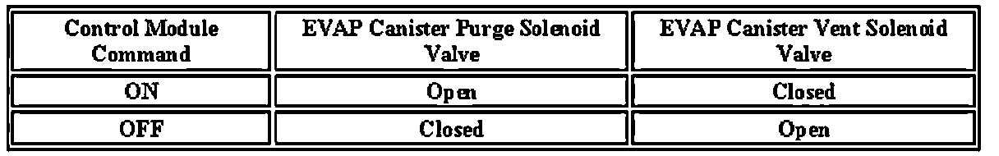

P0496
DTC P0496
Diagnostic Instructions
- Perform the Diagnostic System Check - Vehicle prior to using this diagnostic procedure.
- Review Strategy Based Diagnosis for an overview of the diagnostic approach.
- Diagnostic Procedure Instructions provide an overview of each diagnostic category.
DTC Descriptor
DTC P0496: Evaporative Emission System Flow During Non-Purge
Circuit/System Description
This DTC tests for undesired intake manifold vacuum flow to the evaporative emission (EVAP) system. The control module seals the EVAP system by commanding the EVAP canister purge solenoid valve OFF and the EVAP canister vent solenoid valve ON. The control module monitors the fuel tank pressure (FTP) sensor to determine if a vacuum is being drawn on the EVAP system. If vacuum in the EVAP system is more than a predetermined value within a predetermined time, this DTC sets.
The following table illustrates the relationship between the ON and OFF states, and the Open or Closed states of the EVAP canister purge and vent solenoid valves.

Conditions for Running the DTC
- DTCs P0106, P0107, P0108, P0116, P0117, P0118, P0120, P0121, P0122, P0123, P0220, P0222, P0223, P0442, P0443, P0446, P0449, P0451, P0452, P0453, P0454, P0464, P0608, P0609, P0641, P0651, P1516, P2101, P2119, P2120, P2122, P2123, P2125, P2127, P2128, P2135, P2138 are not set.
- The ignition voltage is between 11-18 volts.
- The barometric pressure (BARO) is more than 74 kPa.
- The fuel level is between 15-85 percent.
- The engine coolant temperature (ECT) is less than 35°C (95°F).
- The intake air temperature (IAT) is between 4-30°C (39-86°F).
- DTC P0496 runs once per cold start when the above conditions are met.
Conditions for Setting the DTC
The control module detects more than 10 inch H2O vacuum for 5 seconds during a non-purge condition.
Action Taken When the DTC Sets
DTC P0496 is a Type B DTC.
Conditions for Clearing the MIL/DTC
DTC P0496 is a Type B DTC.
Circuit/System Testing
1. Start the engine.
2. Seal the EVAP system using the Purge/Seal function with a scan tool.
3. Observe the FTP sensor with a scan tool. The Fuel Tank Pressure Sensor parameter should be less than 1.7 volts after 90 seconds.
- If the Fuel Tank Pressure Sensor parameter is greater than the specified range, replace the EVAP canister purge solenoid valve.
Repair Instructions
Perform the Diagnostic Repair Verification after completing the diagnostic procedure.
Evaporative Emission Canister Purge Solenoid Valve Replacement